THE WORLD OF SOULSBORNE

Four worlds. Four different journeys.
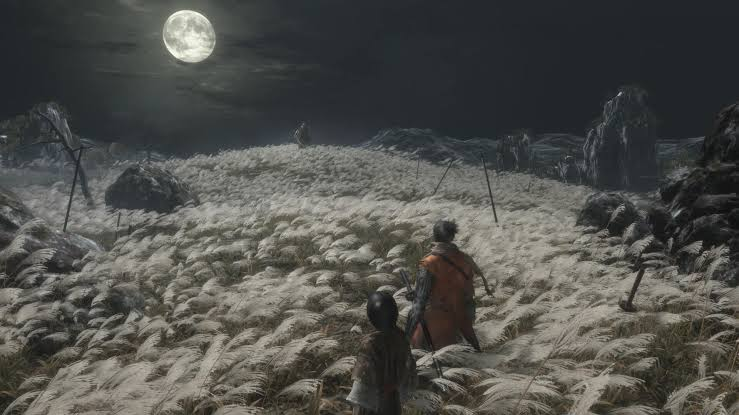
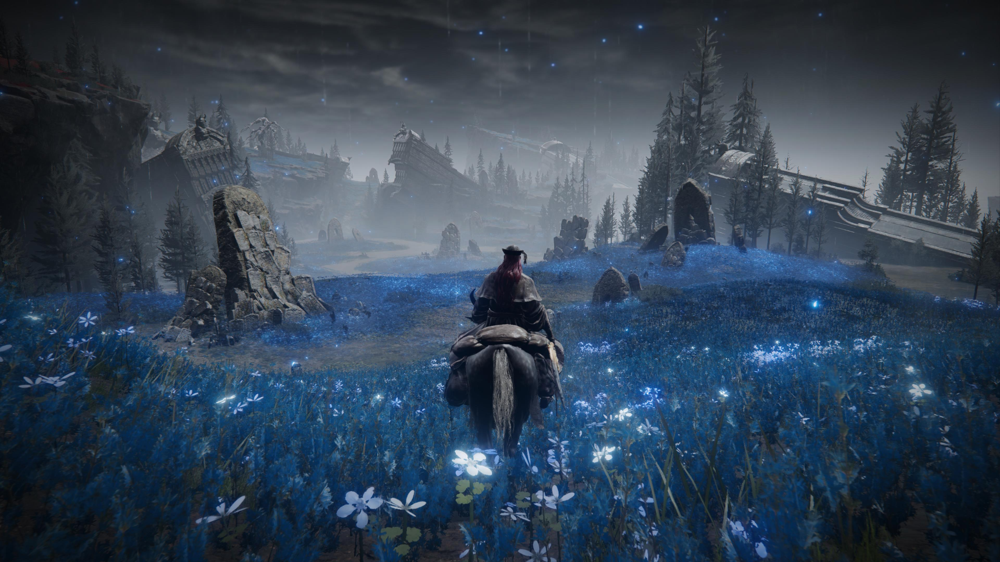
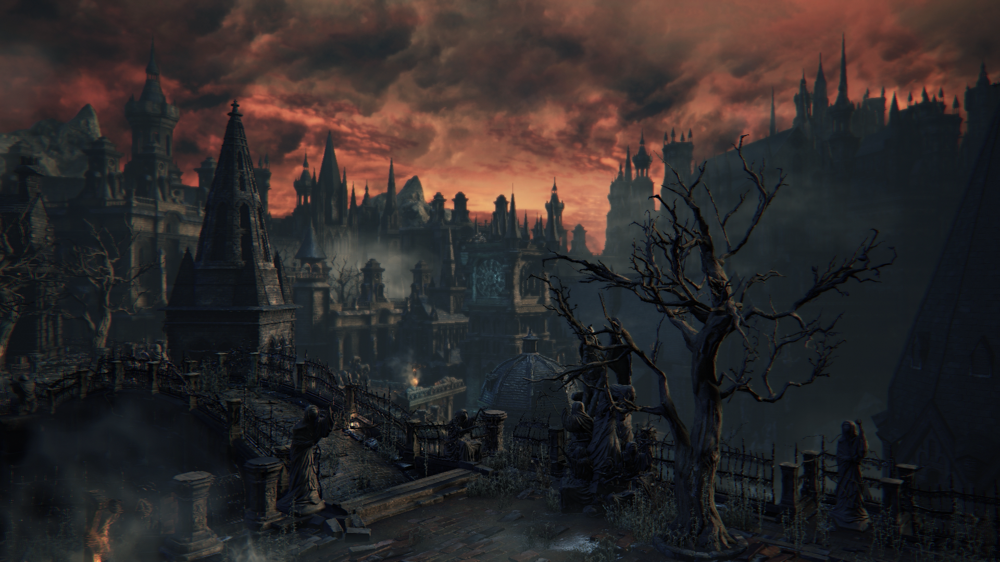
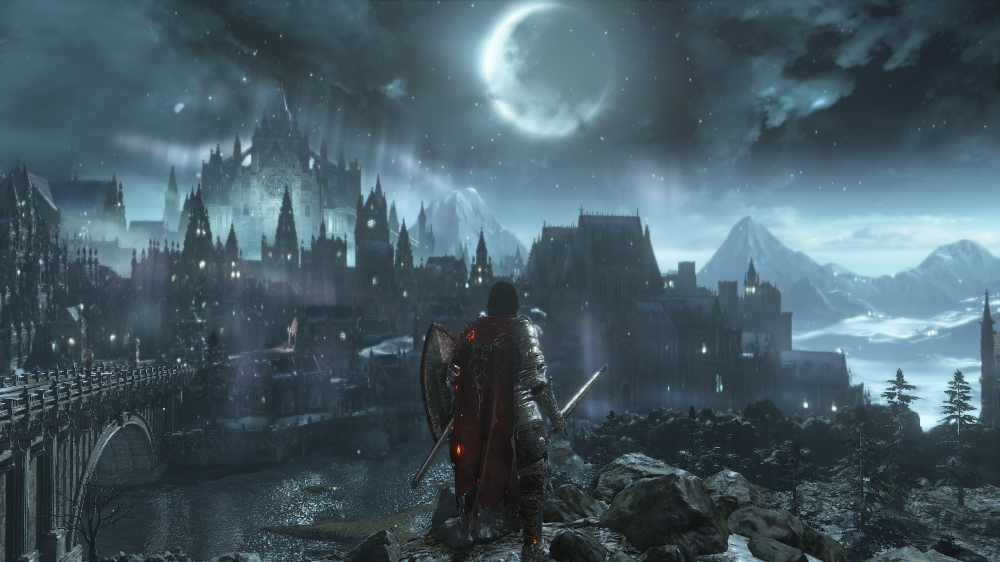
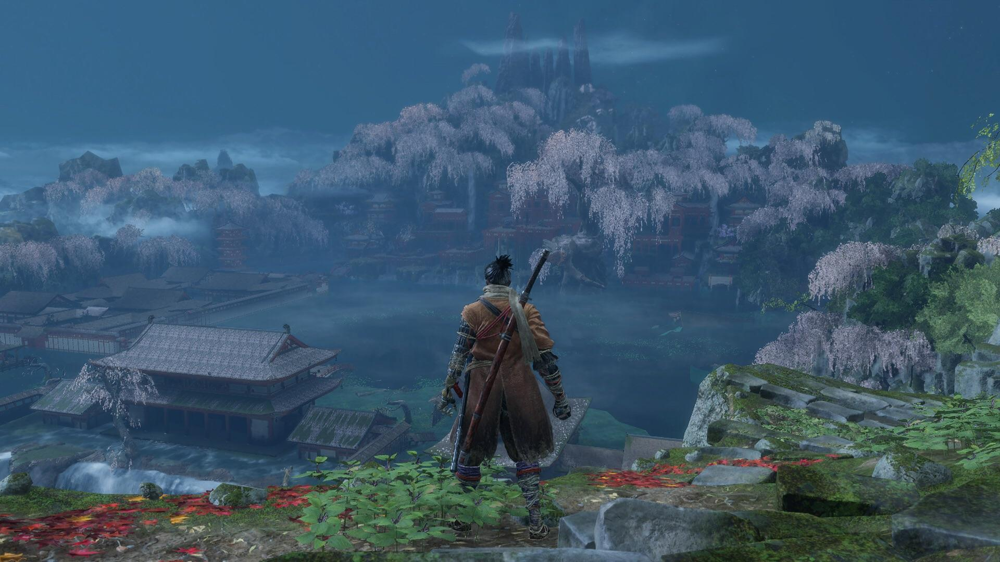
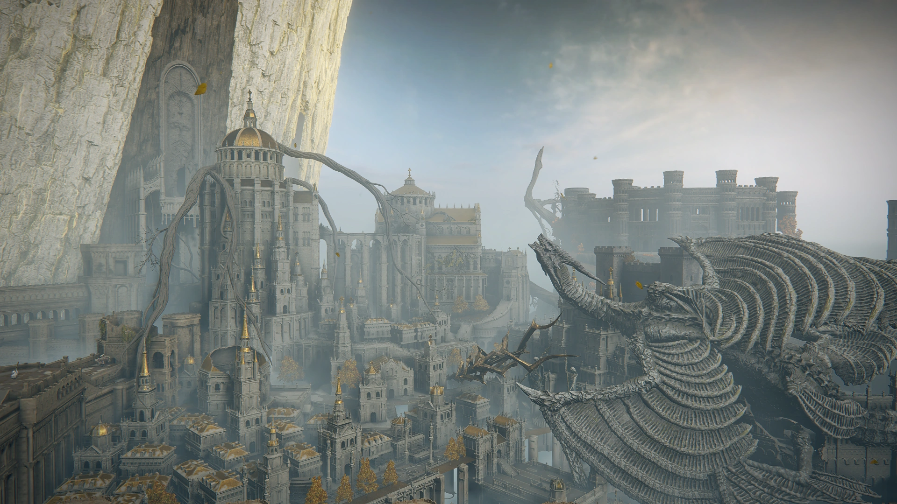
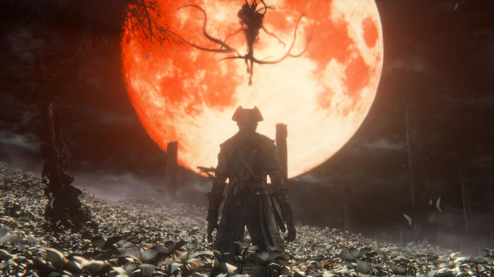
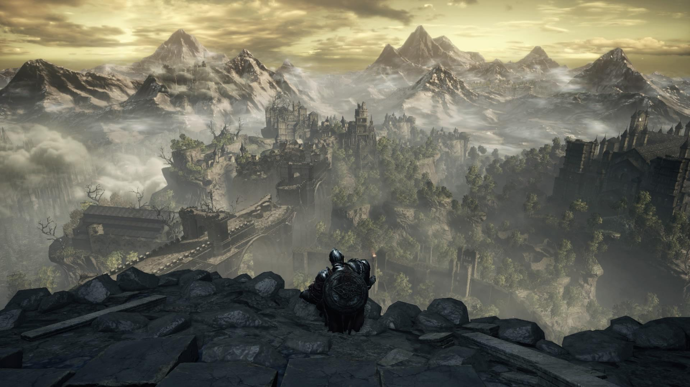
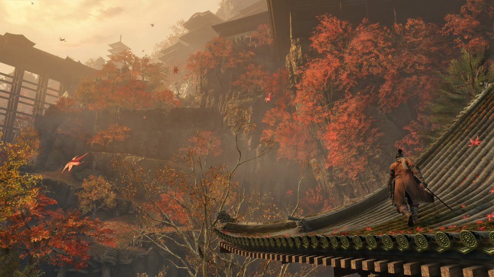
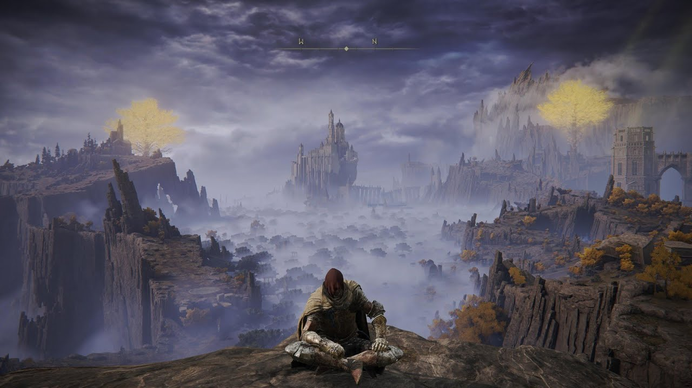
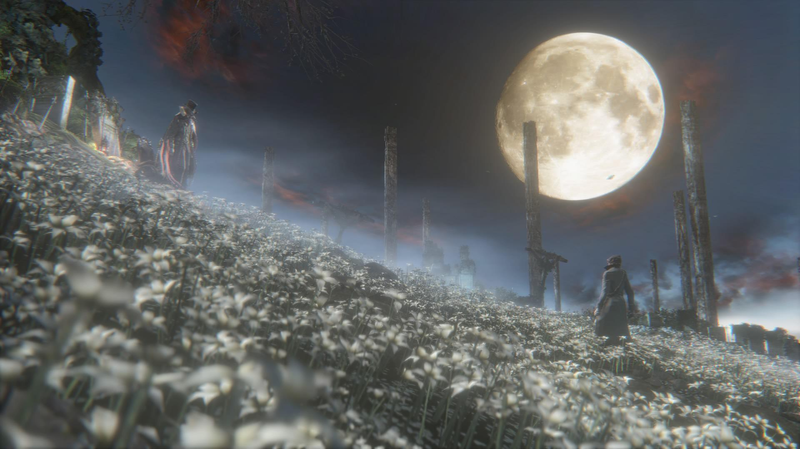
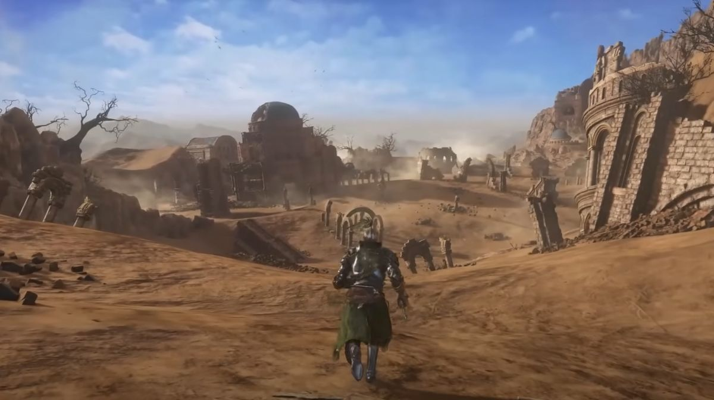
The Soulsborne genre is a fan-coined subgenre of action role-playing games heavily defined by an unforgiving level of difficulty, mechanical precision, and tense, atmosphere-driven worlds.
Environmental Storytelling: Lore told through item descriptions, subtle environmental details, rather than long exposition.
High-Stakes Combat: Stamina management, precise timing, and high punishment for reckless mistakes.
Interconnected World Design: Intricate shortcuts, looping paths, and breathtaking vistas that reward curiosity.
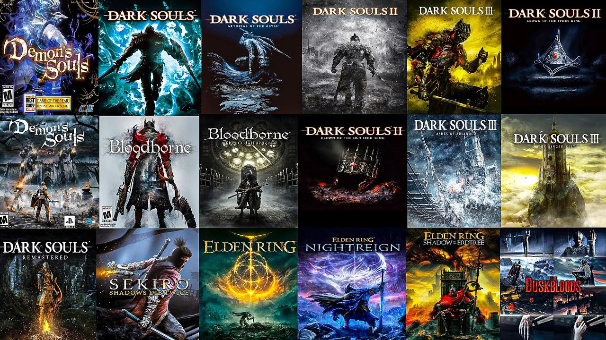